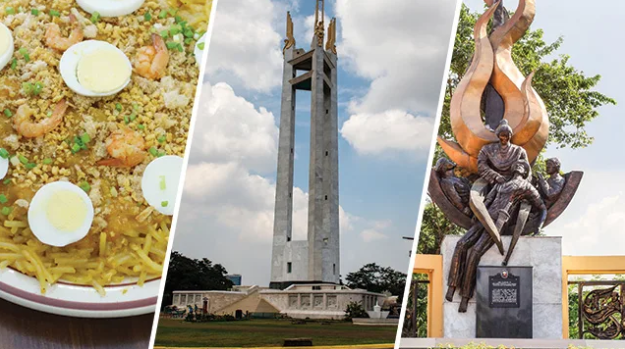
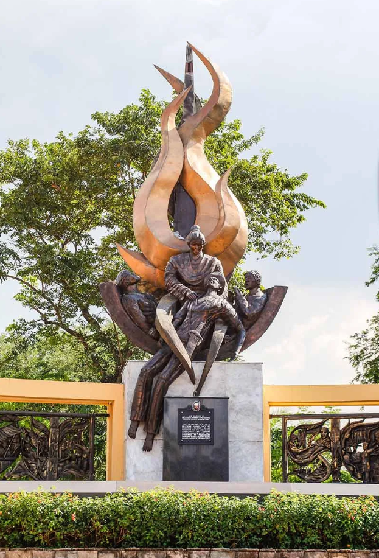

History, culture, food: For gems in plain sight, revisit Quezon City
Meet Tandang Sora
The storied past of Quezon City reaches out to other parts of the city. Visit the Tandang Sora National Shrine on Banlat Road and learn about the life of the “Mother of the Philippine Revolution,” Melchora Aquino, better known as Tandang Sora.
The Quezon City government had her remains reinterred in the Shrine in commemoration of her 200th birthday in 2012. The Shrine also has an art gallery where you can view paintings and sculptures of Tandang Sora made by Filipino artists and students from all over Quezon City.
the foods
The stretch is littered with restaurants offering exciting dishes from every end of the flavor spectrum. A top pick is The Sweet Spot, a café run by a husband and wife team that marry their love of good food and design.
It offers an eclectic mix of Filipino, Southwestern, and Oriental dishes, good for big groups who can’t seem to agree on what to eat for lunch or dinner. For those craving for Filipino fare, try Marciana’s famous pancit palabok and putong pandan, or the pink salmon head ulo-ulo or bulalo of
The stretch is littered with restaurants offering exciting dishes from every end of the flavor spectrum. A top pick is The Sweet Spot, a café run by a husband and wife team that marry their love of good food and design.
It offers an eclectic mix of Filipino, Southwestern, and Oriental dishes, good for big groups who can’t seem to agree on what to eat for lunch or dinner. For those craving for Filipino fare, try Marciana’s famous pancit palabok and putong pandan, or the pink salmon head ulo-ulo or bulalo of